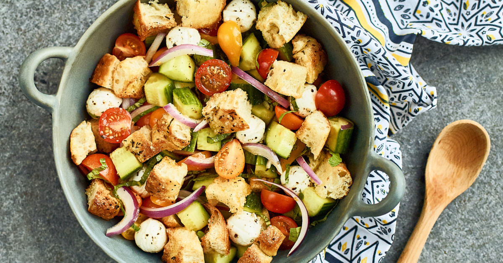

Home
Focaccia Panzanella

At the height of tomato season, for every perfectly ripe, taut and juicy specimen, there’s an overripe, oozing counterpart not far away. The Tuscan bread salad called Panzanella is the perfect place to use those sad, soft tomatoes that are still rich in flavor. Traditional panzanella is made with stale, dried bread that’s rehydrated from a dressing of sweet tomato juices, vinegar and plenty of olive oil. This version also includes some mozzarella for richness and cucumber for crunch. It’s an ideal make-ahead dish; the longer the mixture sits (up to 6 or so hours), the better it tastes. Just make sure your bread thoroughly dries out in the oven so it won’t turn to mush.
Ingredients:
- 5 cups cubed focaccia bread
- 1 clove garlic, crushed
- ½ teaspoon white sugar
- 1 anchovy fillet (Optional)
- ⅓ cup red wine vinegar, or more to taste
- ⅓ cup extra-virgin olive oil, or to taste
- 3 vine-ripened tomatoes, cut into 1- to 2-inch pieces, or more to taste
- 1 pint cherry tomatoes, halved
- salt and freshly ground black pepper to taste
- ⅔ cup sliced fresh mozzarella cheese (Optional)
- ¼ cup thinly sliced red onion
- ½ cup fresh basil leaves, torn into small pieces
Steps:
- Preheat the oven to 350 degrees F (175 degrees C). Line a baking sheet with parchment paper or a silicone baking mat.
- Place bread cubes on the prepared baking sheet.
- Toast bread in the preheated oven until browned and fully crisp, about 20 minutes. Remove from the oven and let cool down to room temperature.
- Mash garlic, sugar, and anchovy into a coarse paste using the back of a fork. Add vinegar and oil; whisk until combined.
- Toss vine-ripened tomatoes, cherry tomatoes, salt, and pepper into the dressing with a spatula. Let sit for 10 minutes.
- Add mozzarella and red onion to the tomato mixture and toss with a spatula to combine. Add bread cubes and mix until saturated as desired. Mix in basil. Taste for seasoning before serving.